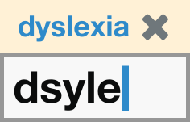
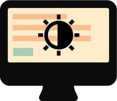

Designing for users with dyslexia
Do use images and diagrams to support text
Don't use large blocks of heavy text

Some people with dyslexia have trouble focusing when reading on a screen. They can experience visual distortion where letters and words get jumbled. Large blocks of content can be intimidating, use images to help illustrate the point and break up copy.
Do align text to the left and keep a consistent layout
Don't underline words, use italics or write in capitals
A consistent layout will help someone with dyslexia navigate a screen. It will help draw their eyes to relevant content and build familiarity and confidence as they go. Serif fonts have hooks at the end of letter strokes that can cause letters to run together - the same is true for italics.
Do consider producing materials in other formats (for example, audio or video)
Don't force users to remember things from previous pages - give reminders and prompts

Many people with dyslexia experience anxiety about being able to read and retain the information given to them. They may feel pressure if they are presented with lots of information on separate screens. Some people are able to remember information better if have listened to it or watched on a video. Video, graphics and photos help to create a visual memory.
Do keep content short and simple, make clear prompts

Don't rely on accurate spelling. Use autocorrect or provide suggestions
Fewer words are better for someone who has trouble reading. Use bullet points to help guide a dyslexic user through your content. People with dyslexia may find spelling and words order challenging. Tools like predictive text, autocorrect and speech recognition can help them get things right.
Do let users change the contrast between the background and text
Don't put too much information in one place
Many dyslexic users are sensitive to the bright, high contrast colours. They can make words swirl and blur together. Many users adjust their screen contrast or use coloured filters on their screen to help ease this symptom.